阑尾炎床旁超声（POCUS）中文教程
这是一份面向急诊、全科、超声及床旁医学学习者的中文图解教程，通过连续动态图梳理探头选择、分级加压、正常阑尾识别、急性阑尾炎征象与系统扫查路径。内容用于学习交流，不替代临床诊断、正式影像报告或当地诊疗流程。
1. 学习目标
- 掌握疑似阑尾炎时的探头选择、体位、扫查入口和加压技巧。
- 识别正常阑尾的盲端、可压缩、外径较小等特征。
- 识别急性阑尾炎的主要征象与继发征象。
- 在看不到阑尾时，使用系统化路径继续寻找，而不是只在压痛点反复停留。
2. 证据与临床定位
床旁超声在儿童阑尾炎评估中很有价值，尤其适合减少不必要的电离辐射。原文引用的系统评价显示，在 461 名儿童数据中，急诊医师 POCUS 诊断阑尾炎的敏感度约 86%，特异度约 91%，阳性似然比约 9.24，阴性似然比约 0.17。
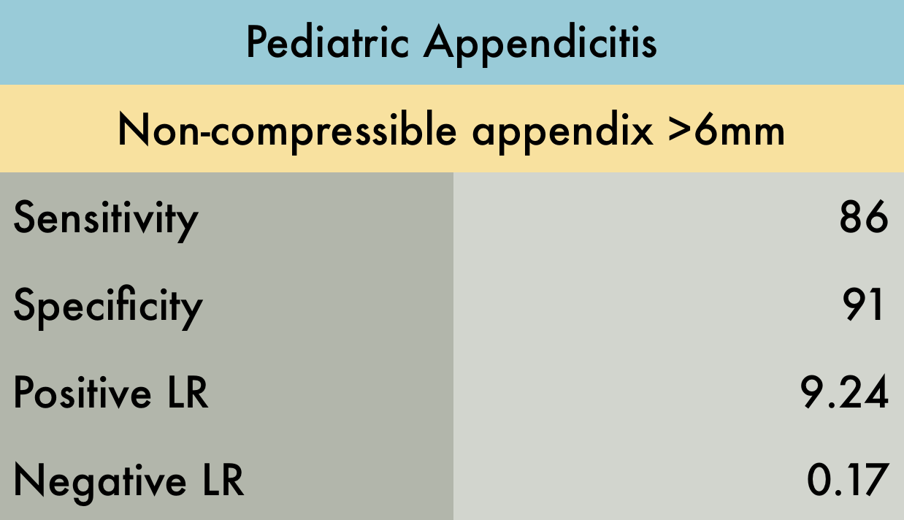
3. 探头选择
首选高频线阵探头，尤其是儿童和体型较瘦成人。线阵探头分辨率高，更容易看清浅表右下腹结构和阑尾壁层次。
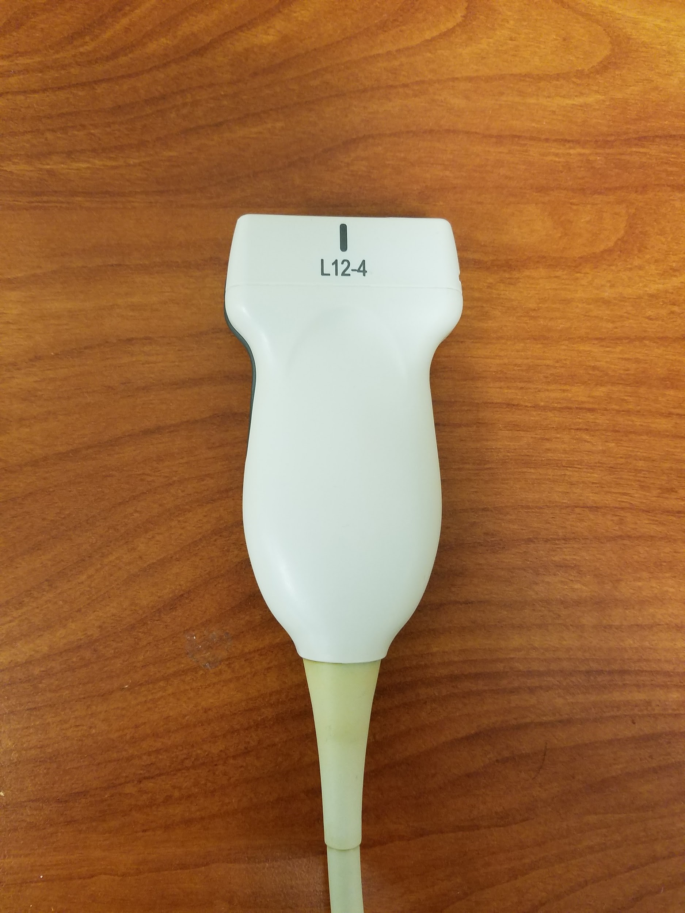
当患者体型较大、肠气多、阑尾位置较深、怀疑后盲肠阑尾，或线阵穿透不足时，换用低频曲阵或相控阵探头。低频探头牺牲一部分分辨率，但可获得更深视野。
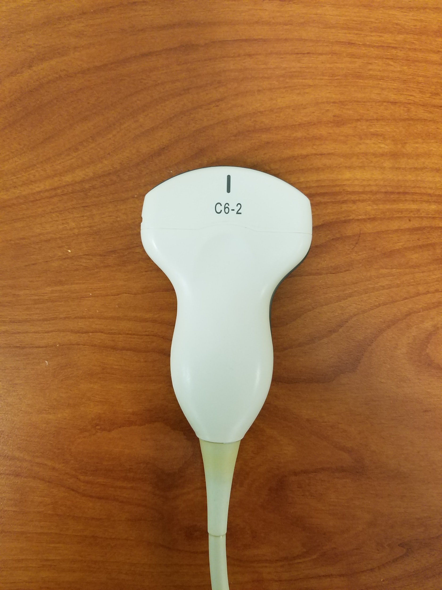
4. 基本扫查流程
- 让患者仰卧，先从右下腹最大压痛点开始。
- 使用 graded compression（分级加压）：缓慢、持续下压，把肠气和可移动肠袢挤开，同时把阑尾压近探头。
- 先找稳定解剖标志：腰大肌、髂动脉、髂静脉、盲肠和升结肠。
- 寻找从盲肠发出的盲端管状结构；同时用纵切和横切确认。
- 在横切面测量阑尾最大外径，通常使用外壁到外壁；同时观察是否可压缩、是否有蠕动、周围脂肪和液体情况。
5. 正常解剖与正常阑尾
右下腹常见定位关系是：阑尾邻近腰大肌和髂血管，盲端结构是确认阑尾的关键。原图中 Ap 表示 Appendix（阑尾），P 表示 Psoas（腰大肌），Ia 表示 Iliac artery（髂动脉），Iv 表示 Iliac vein（髂静脉）。
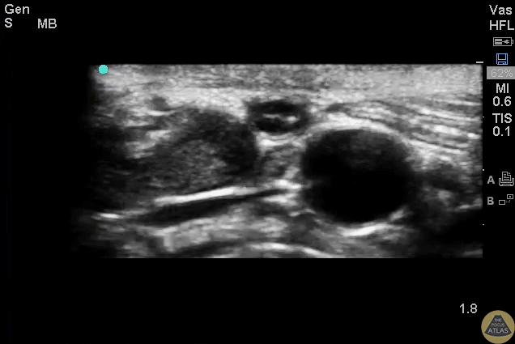
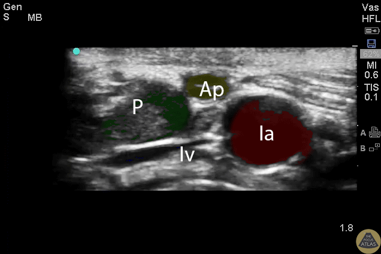
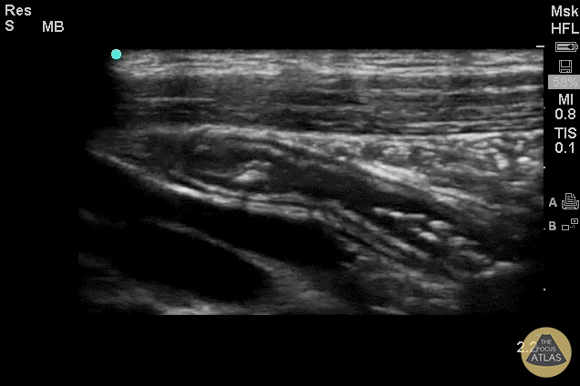
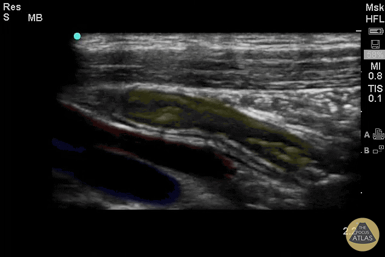
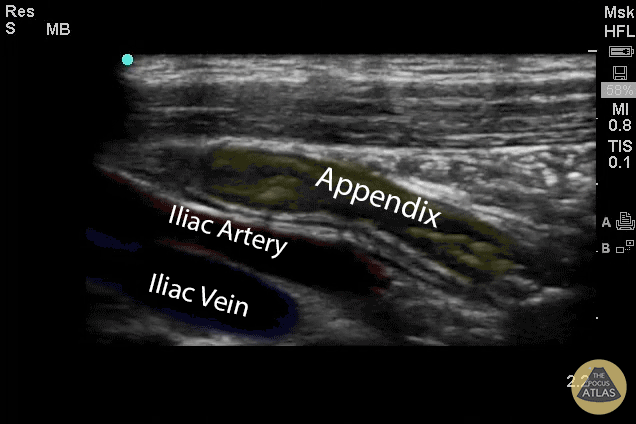
正常阑尾一般外径小于 6 mm、可被压缩、无固定扩张、无明显周围脂肪高回声或游离液。纵切时表现为盲端管状结构；横切时可呈小圆形或同心圆样结构。
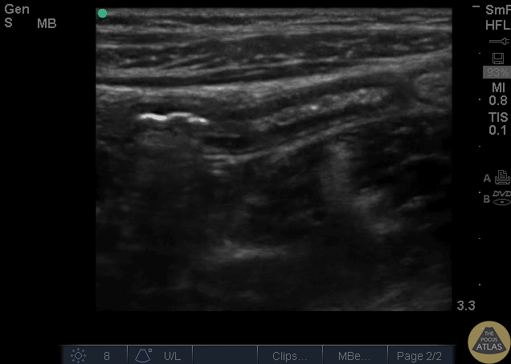

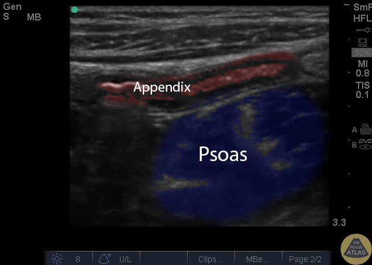
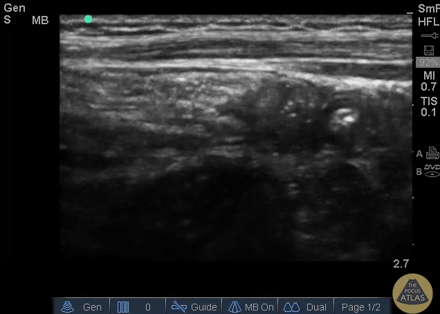
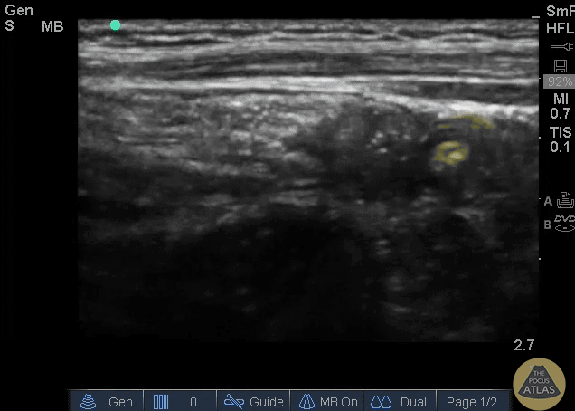
6. 急性阑尾炎的主要征象
- 阑尾外径增大，常用阈值为大于 6-7 mm；原文强调成人常以 >7 mm 更有提示意义，儿童常参考 >6 mm。
- 阑尾不可压缩。需要注意：穿孔后阑尾壁张力下降，有时反而可能被压缩，因此不能只靠一个征象。
- 无蠕动，且与相邻小肠不同，不会随时间表现出正常推进性运动。
- 可见管壁增厚、靶样改变，或局部压痛与探头压迫位置一致。
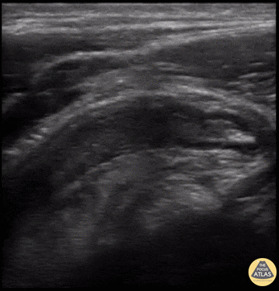

7. 继发征象
当阑尾本身不容易完整显示时，继发征象尤其重要；即使已经看到扩张阑尾，也应主动寻找这些改变来判断炎症程度和并发症风险。
- 阑尾石/粪石：阑尾腔内强回声结构，常伴后方声影。
- 阑尾周围游离液：低回声液性暗区，可见于炎症水肿、局部渗出或穿孔。
- 彩色多普勒血流增多：“火环征”提示阑尾壁充血。
- 周围脂肪或大网膜回声增强，提示炎症反应。
- 局部淋巴结肿大、邻近腹膜增厚高回声、小肠扩张低动力、盲肠尖或邻近肠管壁增厚，也可作为支持性发现。
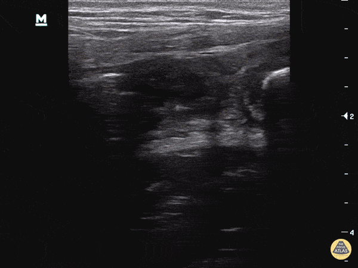
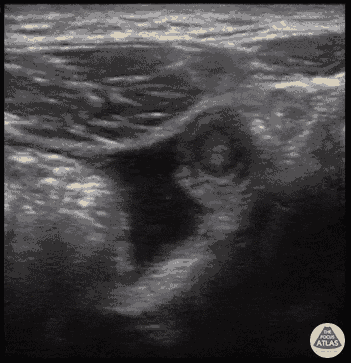
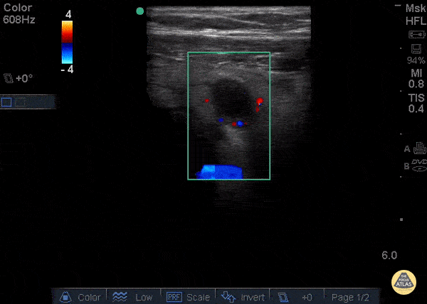
8. 找不到阑尾时的系统扫查
如果压痛点附近没有立即看到阑尾，不要过早结束。可以采用 Sivitz 等描述的系统化寻找方法：
- 在右下腹向外侧移动，先识别升结肠和侧腹壁。结肠常表现为非蠕动、含气或含液结构，可见脏污声影和结肠袋。
- 沿升结肠向下追踪至盲肠。
- 从盲肠向内侧跨过腰大肌和髂血管扫查；保持腰大肌与髂血管在视野中，沿盲肠边缘向骨盆和脐方向递进。
- 把探头转为矢状位，让盲肠长轴进入视野，再向内侧扫查，并用探头把盲肠压向腰大肌，寻找从盲肠发出的盲端阑尾。
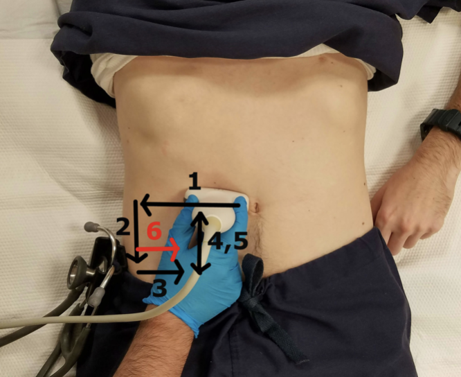
怀疑后盲肠阑尾时，可让患者左后斜位约 45 度，沿右侧腹部冠状/旁矢状方向扫查，使探头长轴大致平行腰大肌；阑尾通常位于腰大肌前方。若仍困难，可在仰卧位重复扫查。
还可尝试后方手动加压：一只手放在右下腹背侧，四指从后向前、前内方向推压，使阑尾更接近腹壁。原文提到相关研究中，这一做法可增加部分病例的可视化率。
9. 报告与临床沟通要点
- 是否看见阑尾；若看见，记录纵切/横切图像。
- 最大外径、是否可压缩、是否有蠕动。
- 是否有阑尾石、游离液、壁增厚、周围脂肪高回声、局部血流增多。
- 扫查受限因素：疼痛、肠气、体型、不能配合、阑尾位置深等。
- 结论应区分“支持阑尾炎”“未见典型证据但不能排除”“图像受限”。
10. 来源、版权与参考
- The POCUS Atlas: Appendicitis
- Benabbas R 等：急诊医师 POCUS 诊断儿童急性阑尾炎的系统评价与 Meta 分析，Acad Emerg Med, 2017。
- Quigley AJ、Stafrace S：小儿阑尾超声综述，Insights Imaging, 2013。
- Sivitz AB 等：急诊床旁超声和系统化扫查流程，Ann Emerg Med, 2014。
- Noguchi T、Chang ST、Lee JH 等：原文引用的探查技巧和可视化辅助方法相关研究。